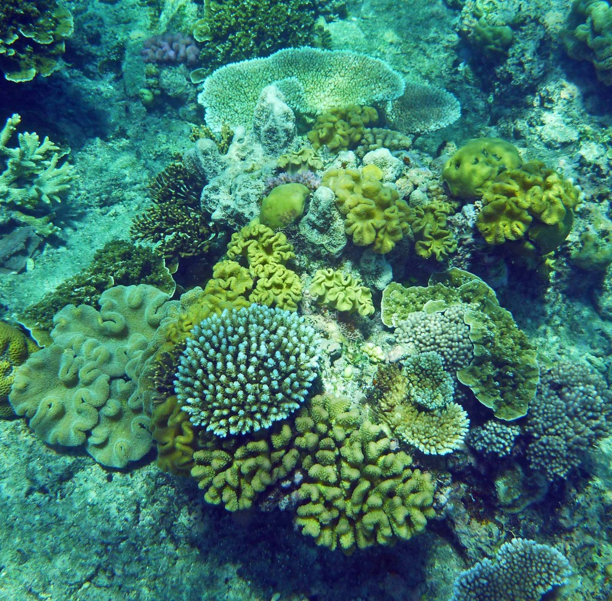
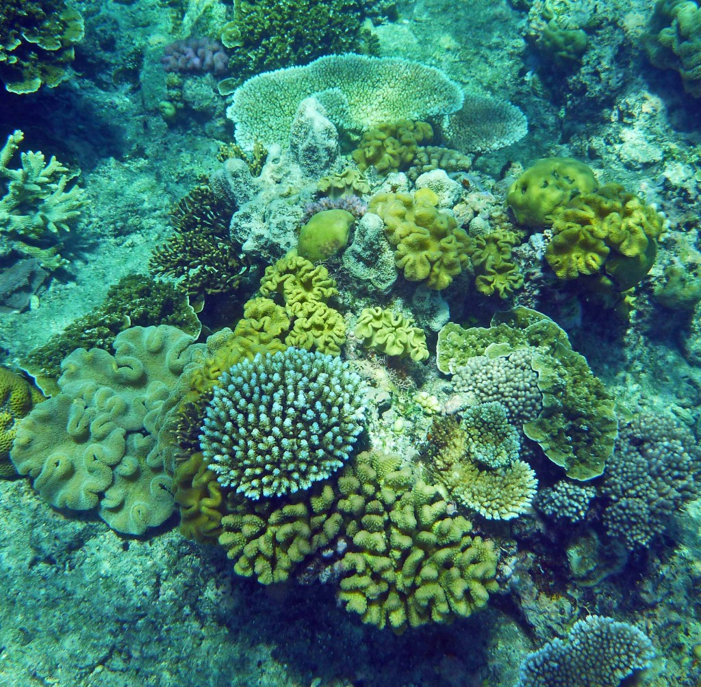

Service
Aloha dudes and dudettes! We operate our service with a team! Each group that comes in to scuba dive will have an experienced diver with them! The diver will guide all group members on how to properly dive and proceed to take them to the diver locations! They will then reinstruct the operation and help situate each diver for diving! Each diver will be able to dive for as long as their oxygen tank lasts! The experienced diver will make sure to watch over everyone and dive with the group as well! Pictures will be taken from the experienced diver and can be baught at the end!
Equipment
The equipment you will be given is a diving suit, which is a watertight costume for underwater use, connected to the surface or to a diving bell by a tube that provides the wearer with air. You will also be receiving an oxygen tank, which will determine how long your dive is! These will be given to each member of the group!

 
